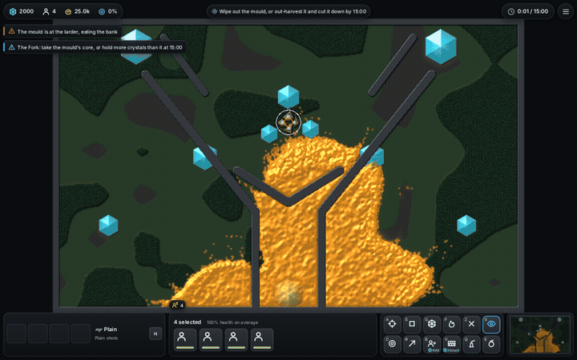
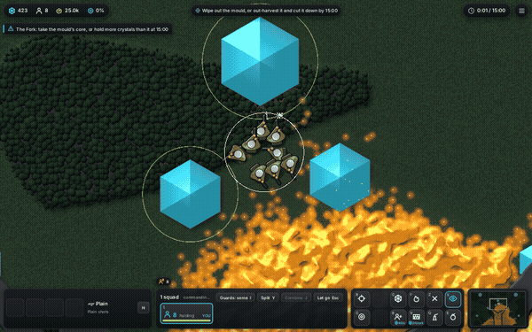
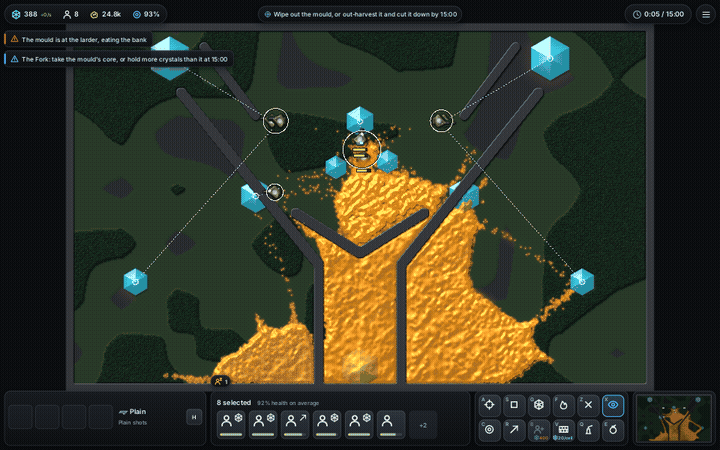
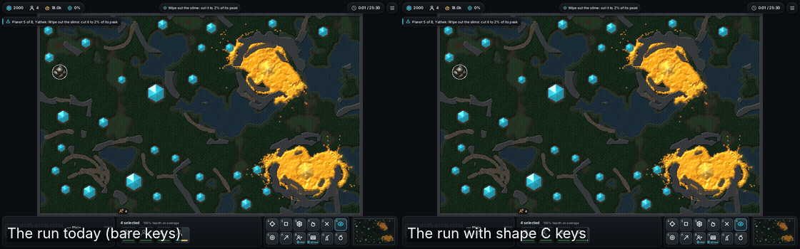

<title>Slime Enemy Review</title>
<meta name="claude:viewport-fit-sides" content="cover">
<link rel="stylesheet" href="https://fonts.googleapis.com/css2?family=Bricolage+Grotesque:opsz,wght@12..96,600;12..96,750&family=Source+Sans+3:wght@400;600&family=JetBrains+Mono:wght@400&display=swap">
<style>
/* Layout: one reading column, clips full width of it, findings as numbered items because they are ranked */
:root{
  --bg:#f3f2ec; --panel:#e8e6dc; --fg:#1d211c; --muted:#5b6157;
  --slime:#c77a06; --slime-soft:#f2d49a; --crystal:#1590a8; --line:#cfccbf;
  --display:"Bricolage Grotesque", "Segoe UI", system-ui, sans-serif;
  --body:"Source Sans 3", "Segoe UI", system-ui, sans-serif;
  --mono:"JetBrains Mono", ui-monospace, Consolas, monospace;
}
@media (prefers-color-scheme: dark){:root:not([data-theme="light"]){
  --bg:#141812; --panel:#1d231b; --fg:#e7e9e1; --muted:#9aa294;
  --slime:#f1a12a; --slime-soft:#4a3410; --crystal:#5cc8dc; --line:#2f382c; color-scheme:dark}}
:root[data-theme="dark"]{
  --bg:#141812; --panel:#1d231b; --fg:#e7e9e1; --muted:#9aa294;
  --slime:#f1a12a; --slime-soft:#4a3410; --crystal:#5cc8dc; --line:#2f382c; color-scheme:dark}
body{background:var(--bg);color:var(--fg);font:17px/1.55 var(--body);
  padding-left:max(16px,env(safe-area-inset-left,0px));padding-right:max(16px,env(safe-area-inset-right,0px));padding-block:28px 64px}
main{max-width:780px;margin:0 auto;display:flex;flex-direction:column;gap:28px}
h1,h2,h3{font-family:var(--display);text-wrap:balance;line-height:1.15;margin:0}
h1{font-size:2.3rem;font-weight:750}
h2{font-size:1.45rem;font-weight:750;border-top:2px solid var(--slime);padding-top:14px}
h3{font-size:1.08rem;font-weight:600}
p{margin:0}
section{display:flex;flex-direction:column;gap:12px}
.lede{color:var(--muted);font-size:1.02rem}
.eyebrow{font:12px/1 var(--mono);letter-spacing:.08em;text-transform:uppercase;color:var(--slime)}
ul,ol{margin:0;padding-left:1.25em;display:flex;flex-direction:column;gap:8px}
li{min-width:0}
code{font:0.86em var(--mono);background:var(--panel);padding:1px 4px;border-radius:3px}
figure{margin:0;display:flex;flex-direction:column;gap:8px}
figure img{width:100%;border-radius:6px;border:1px solid var(--line);background:#000}
figcaption{font-size:.92rem;color:var(--muted)}
figcaption b{color:var(--fg)}
.counts{font:13px/1.5 var(--mono);color:var(--fg);background:var(--panel);padding:8px 10px;border-radius:6px;overflow-x:auto;white-space:pre}
.short{background:var(--slime-soft);border-radius:8px;padding:16px 18px}
.short ol{gap:10px}
.tbl{overflow-x:auto}
table{border-collapse:collapse;width:100%;font-size:.94rem}
th,td{text-align:left;padding:7px 8px;border-bottom:1px solid var(--line);vertical-align:top}
th{font-family:var(--display);font-weight:600}
.num{font-variant-numeric:tabular-nums}
.q{border-left:3px solid var(--crystal);padding-left:12px}
.tag{font:12px var(--mono);color:var(--crystal)}
footer{font-size:.85rem;color:var(--muted)}
</style>
<main>
<header style="display:flex;flex-direction:column;gap:10px">
  <span class="eyebrow">Larder World · the enemy · 2026-11-15</span>
  <h1>Slime enemy review</h1>
  <p class="lede">Where the slime stands as an opponent: how it plays, what it makes you do, what's missing and where it could go. Clips are from the game window on software Vulkan (seed 1, one run each), with the game's own counts beside them.</p>
</header>

<section class="short">
  <h2 style="border:0;padding:0">The short version</h2>
  <ol>
    <li><b>The slime is a tide, not an army.</b> It grows along food scent, covers crystals and bites whatever stands where it grows. It almost never decides to come for you. It's deadly to a squad that stands still or walks in, and harmless to one that stays at its edge and shoots. That's why you beat it easily by hand while scripted hands get wiped or stall.</li>
    <li><b>The run doesn't play the slime you chose.</b> Every roguelike planet plays the old 5,000-walker race slime with only its tier's keys added: no shared food, withering, panic or charge. That's why it "loses 90% of its walkers in the first minute". With shape C's keys the same planet's slime grows instead (18,034 to 29,739 walkers at 2:00, against 5,907). The run thread has taken the fix.</li>
    <li><b>Its strength is capped by food and slots, so it peaks early.</b> Its size follows the crystals it holds, and the slot cap is 50,000 on every map. On the core world it lands above that cap and can only shrink. Nothing makes a slime that's left alone stronger over a level.</li>
    <li><b>It ignores your economy.</b> Pumps are now the main income, and they give off no scent. Your buildings are only ever hit when the slime happens to grow over them.</li>
    <li><b>Most of its character is switched off or missing from the run.</b> Condensing and breakaway creatures are off. The plain C slime and the Grudge (the hardest tier measured) aren't in the run's ladder, and the Grudge is CPU only.</li>
  </ol>
</section>

<section>
  <h2>How it plays now</h2>
  <p>The default slime is shape C: 25,000 walkers on the Fork, with slots for 50,000. It shares food along its body, withers where it's cut off from every crystal, and its cut-off parts panic and charge. Each walker touching a soldier takes 2 health a second, and thick slime slows a soldier to a fifth of its speed. Left alone, it fills its stem, reaches the larder in about 13 s and has a tendril on every crystal by about 30 s.</p>
  <figure>
    
    <figcaption><b>Left alone (Fork, shape C, idle hand, 1 to 88 s).</b> The four soldiers at the larder are gone by 16 s. The slime then eats the bank, which ends the round at 88 s.</figcaption>
  </figure>
  <div class="counts">t   1 s  mould 24,993  soldiers 4  bank 2,000
t  16 s  mould 24,055  soldiers 0  killed 769
t  61 s  mould 29,579  bank 1,001  (the slime is eating the larder)
t  76 s  mould 33,032
t  88 s  ended: squad wiped</div>
  <figure>
    
    <figcaption><b>Fighting from the edge (squad mode, the scripted squads hand, 1 to 60 s).</b> Eight soldiers stand in the open and fire at whatever comes near. The slime never comes for them and they lose nobody. But it regrows faster than stray fire kills it, so by 60 s it's bigger than when they started. Edge fire alone is safe and wins nothing. Cutting a crystal's road is what wins.</figcaption>
  </figure>
  <div class="counts" id="dcounts">t  1 s  mould 24,985  soldiers 8  killed 15
t 11 s  mould 22,561  soldiers 8  killed 2,193
t 21 s  mould 21,923  soldiers 8  killed 3,064   (the low point)
t 40 s  mould 22,960  soldiers 8  killed 3,420
t 60 s  mould 25,416  soldiers 8  killed 3,768</div>
  <figure>
    
    <figcaption><b>The best census plan in the window (the player AI's take hand, 5 to 69 s).</b> It wiped plain C on 6 of 8 seeds on the CPU census (#242), but in the window it harvests 1,800 food and loses its whole squad by 69 s.</figcaption>
  </figure>
  <div class="counts">t  5 s  mould 24,820  soldiers 8  harvested 0
t 41 s  mould 23,841  soldiers 5  harvested 1,500
t 69 s  mould 25,268  soldiers 0  ended: squad wiped</div>
  <h3>What the slime does on purpose</h3>
  <p>Almost everything it does follows food. Only these things point it at you:</p>
  <ul>
    <li>Soldiers give off a faint scent (<code>Rules::smell</code>). A soldier near the slime's home smells like a lure (<code>core_pull</code> 8), so the body closes over a squad there.</li>
    <li>A cut-off part panics. It creeps for 1.5 s as a warning, then dashes for half a second at any unit within gun range + 5 cells. This is the only attack that warns you it's coming, and you only see it after you've cut the slime.</li>
    <li>Tier specials: the Drifter follows soldiers off a dry crystal, the Swarmer and Sleeper answer the alarm your shots raise, and the Grudge remembers where it was shot (CPU only).</li>
  </ul>
  <p>So a human who keeps the squad at the slime's edge never faces a decision from the slime. Your own notes agree. You beat C in 5:51 on 11-12, you "easily beat the game in all my playtests" (11-14), and you raised the run's win line because you kept winning with slime left (11-15). Meanwhile the scripted hands either walk into it and die (above) or stall. A tide punishes mistakes. It never makes you choose.</p>
</section>

<section>
  <h2>The strategies it forces</h2>
  <div class="tbl"><table>
    <tr><th>Slime</th><th>What beats it today</th><th>Does the slime answer?</th></tr>
    <tr><td>C (default)</td><td>Fire from the edge, cut a crystal's road, let the far part wither, mop up</td><td>Only the panic charge after a cut</td></tr>
    <tr><td>Drifter</td><td>Any squad</td><td>Follows soldiers off a dry crystal</td></tr>
    <tr><td>Sprawler</td><td>Walls. Chasing it loses</td><td>No</td></tr>
    <tr><td>Trunk</td><td>Starve it</td><td>No</td></tr>
    <tr><td>Swarmer</td><td>A kill zone</td><td>Swarms toward your fire</td></tr>
    <tr><td>Sleeper</td><td>Bait, then strike</td><td>Wakes on alarm</td></tr>
    <tr><td>Sporer</td><td>Claim crystals first</td><td>Spores into new ground</td></tr>
    <tr><td>Grudge (CPU only, not in the run)</td><td>Don't fire twice from one spot</td><td>Comes back to where it was shot</td></tr>
  </table></div>
  <p>The counters are real and each tier has one. But almost all of them are "stand somewhere smart and shoot". The tiers change how the slime moves much more than what it goes after.</p>
</section>

<section>
  <h2>What's broken or missing</h2>
  <h3>1. The run plays a different slime <span class="tag">bug · run thread fixing</span></h3>
  <p>A run's planets, from the menu and from the command line, start from the old race-world keys at 5,000 base walkers: upkeep 0.001 (five times C's), slots ten times the start, no sharing, withering or panic. Walkers away from food starve in the first half-minute. That's the run thread's "nine tenths gone" and the empty-looking big planets.</p>
  <figure>
    
    <figcaption><b>Planet 5, seed 1, idle, 1 to 121 s.</b> Left: the run today. Right: the same level with C's keys added.</figcaption>
  </figure>
  <div class="tbl"><table class="num">
    <tr><th>Walkers</th><th>Start</th><th>30 s</th><th>60 s</th><th>2:00</th></tr>
    <tr><td>Planet 1, run today</td><td>3,088</td><td>1,397</td><td>1,445</td><td>1,479</td></tr>
    <tr><td>Planet 1, C keys</td><td>3,088</td><td>3,203</td><td>4,318</td><td>6,801</td></tr>
    <tr><td>Planet 5, run today</td><td>18,034</td><td>4,545</td><td>4,523</td><td>5,913</td></tr>
    <tr><td>Planet 5, C keys</td><td>18,034</td><td>18,399</td><td>20,140</td><td>29,521</td></tr>
    <tr><td>Core world, run today</td><td>67,442</td><td>7,750</td><td>7,646</td><td>9,273</td></tr>
    <tr><td>Core world, C keys</td><td>67,442</td><td>67,414</td><td>66,281</td><td>54,152</td></tr>
  </table></div>
  <p>One seed per row, so these are a first look, not a census.</p>

  <h3>2. A slot ceiling on every planet <span class="tag">run thread fixing</span></h3>
  <p>C's 50,000 slots don't grow with the planet. The core world lands 67,442 walkers and is already over the ceiling, so with C's keys it can only shrink (54,152 at 2:00). A deeper planet can't hold a bigger slime. The run thread will scale slots with the level and time the core world on the 1070.</p>

  <h3>3. No pressure curve</h3>
  <p>A crystal feeds about 9,400 walkers (the food probe, 11-14), so the slime's size follows the crystals it holds. It peaks once it reaches them, and from then on the player only grinds it down. A slime left alone doesn't escalate. It never hits harder, forms new attacks or ramps up toward the end of the clock. Your 11-11 rule ("If you do nothing, the slime should get much stronger than you and kill you") holds for the first minute, and after that only through spread.</p>

  <h3>4. It ignores your economy</h3>
  <p>Pumps became the main income on 11-15 (#322). A pump has no scent (<code>pump_smell</code> 0) and the slime has no reason to go after buildings, turrets or walls. A player whose pumps sit on crystals the slime isn't heading for faces no pressure at all.</p>

  <h3>5. Its intent is hard to read</h3>
  <p>Apart from the panic's creep, the slime never warns you before it does something. There are no waves, no gathering before a push and no "it's coming for that pump". A body that only spreads is hard to read as an opponent with a plan.</p>

  <h3>6. Its best behaviours are off or missing from the run</h3>
  <ul>
    <li>Condensing (dense, long-fed slime packs into stronger walkers) and the breakaway explorers it makes are built and filmed, but off by default.</li>
    <li>The run's ladder is Drifter, Sprawler, Trunk, Swarmer, Sporer, Sleeper. Neither the plain C slime nor the Grudge appears.</li>
    <li>The Grudge's scar field is CPU only until it shares the toolkit's damage buffer on the GPU.</li>
  </ul>
</section>

<section>
  <h2>Other directions, from the model</h2>
  <p>Each of these builds on something the simulation already holds: food, energy shared along the body, news of food, alarm, scar and dense walkers.</p>
  <ul>
    <li><b>Surges.</b> Energy the body shares builds up in a held region, and past a threshold that region pushes out as a wave toward the nearest soldiers or pumps. You'd see it coming as the body thickens and glows, and it uses the same running as panic. This gives the slime a rhythm and a warning.</li>
    <li><b>Bait economy.</b> A pump that is working gives off food scent, so taking income draws attacks. Defending pumps with turrets and walls becomes the game.</li>
    <li><b>Hunters from condensing.</b> On deeper planets, condensed pieces break off as roaming creatures that go for units, not just crystals. This is your 11-14 "creature" note, built and still unplayed.</li>
    <li><b>Memory everywhere.</b> Port the Grudge's scar to the GPU and give every tier a little of it, so camping one firing spot stops working.</li>
    <li><b>Retaking ground.</b> Spores or breakaways reseed crystals you cleared and left, so the slime regrows behind a squad that pushes on.</li>
    <li><b>A heart on the home world.</b> The core world's slime as one huge condensed body: a boss made from the same rules.</li>
  </ul>
</section>

<section>
  <h2>Questions for you</h2>
  <div class="q"><p><b>1.</b> When you beat the slime, what do you do, and when do you know you've won? (Asked on 11-14, still open.)</p></div>
  <div class="q"><p><b>2.</b> What should its main threat be: taking ground (cover crystals, block income), hunting (come for squads and pumps), or both with the tiers setting the mix? This one is on a card in the thread.</p></div>
  <div class="q"><p><b>3.</b> Should a slime left alone keep getting stronger through a level, with surges that grow over time, or stay capped by the food it holds as it is now?</p></div>
  <div class="q"><p><b>4.</b> Condensing and breakaway creatures: on for every slime, only deeper in the run, or a tier of their own?</p></div>
  <div class="q"><p><b>5.</b> How big should a run planet's slime be? Planet 1 lands 3,088 walkers today, an eighth of the sandbox's 25,000.</p></div>
</section>

<footer>Made by the slime-enemy thread from code on main at 17f2e5b. The counts are the game window's own (`larder-world look=DIR`), on software Vulkan, seed 1. C's keys in the run comparison: capacity=50000 upkeep=0.0002 energy_flow=0.05 wither=0.01 panic=2. Source kept in Reports/slime-review-2026-11-15/.</footer>
</main>
